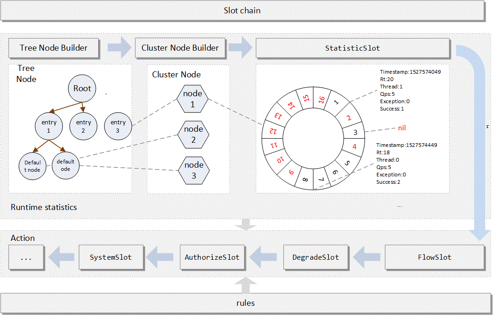
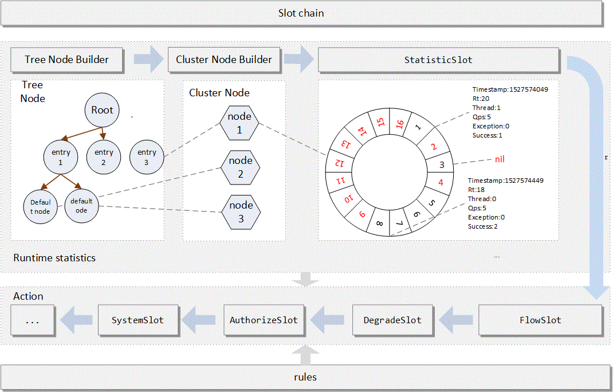

思考
1、当服务访问量达到一定程度，流量扛不住的时候，该如何处理？
2、服务之间相互依赖，当服务A出现响应时间过长，影响到服务B的响应，进而产生连锁反应，直至影响整个依赖链上的所有服务，该如何处理？
这是分布式、微服务开发不可避免的问题。
服务雪崩
服务雪崩效应：因服务提供者的不可用导致服务调用者的不可用,并将不可用逐渐放大的过程，就叫服务雪崩效应
导致服务不可用的原因： 程序Bug，大流量请求，硬件故障，缓存击穿
- 【大流量请求】：在秒杀和大促开始前,如果准备不充分,瞬间大量请求会造成服务提供者的不可用。
- 【硬件故障】：可能为硬件损坏造成的服务器主机宕机, 网络硬件故障造成的服务提供者的不可访问。
- 【缓存击穿】：一般发生在缓存应用重启, 缓存失效时高并发，所有缓存被清空时,以及短时间内大量缓存失效时。大量的缓存不命中, 使请求直击后端,造成服务提供者超负荷运行,引起服务不可用。
在服务提供者不可用的时候，会出现大量重试的情况：用户重试、代码逻辑重试，这些重试最终导致：进一步加大请求流量。所以归根结底导致雪崩效应的最根本原因是：大量请求线程同步等待造成的资源耗尽。当服务调用者使用同步调用时, 会产生大量的等待线程占用系统资源。一旦线程资源被耗尽,服务调用者提供的服务也将处于不可用状态, 于是服务雪崩效应产生了。
解决方案
1. 超时机制
在不做任何处理的情况下，服务提供者不可用会导致消费者请求线程强制等待，而造成系统资源耗尽。加入超时机制，一旦超时，就释放资源。由于释放资源速度较快，一定程度上可以抑制资源耗尽的问题。
2. 服务限流(资源隔离)
限制请求核心服务提供者的流量，使大流量拦截在核心服务之外，这样可以更好的保证核心服务提供者不出问题，对于一些出问题的服务可以限制流量访问，只分配固定线程资源访问，这样能使整体的资源不至于被出问题的服务耗尽，进而整个系统雪崩。那么服务之间怎么限流，怎么资源隔离？例如可以通过线程池+队列的方式，通过信号量的方式。
如下图所示, 当商品评论服务不可用时, 即使商品服务独立分配的20个线程全部处于同步等待状态,也不会影响其他依赖服务的调用。
3. 服务熔断
远程服务不稳定或网络抖动时暂时关闭，就叫服务熔断。
现实世界的断路器大家肯定都很了解，断路器实时监控电路的情况，如果发现电路电流异常，就会跳闸，从而防止电路被烧毁。
软件世界的断路器可以这样理解：实时监测应用，如果发现在一定时间内失败次数/失败率达到一定阈值，就“跳闸”，断路器打开——此时，请求直接返回，而不去调用原本调用的逻辑。跳闸一段时间后（例如10秒），断路器会进入半开状态，这是一个瞬间态，此时允许一次请求调用原本的逻辑，如果成功，则断路器关闭，应用正常调用；如果调用依然不成功，断路器继续回到打开状态，过段时间再进入半开状态尝试——通过”跳闸“，应用可以保护自己，而且避免浪费资源；而通过半开的设计，可实现应用的“自我修复“。
所以，同样的道理，当依赖的服务有大量超时时，在让新的请求去访问根本没有意义，只会无畏的消耗现有资源。比如我们设置了超时时间为1s,如果短时间内有大量请求在1s内都得不到响应，就意味着这个服务出现了异常，此时就没有必要再让其他的请求去访问这个依赖了，这个时候就应该使用断路器避免资源浪费。
4. 服务降级
有服务熔断，必然要有服务降级。
所谓降级，就是当某个服务熔断之后，服务将不再被调用，此时客户端可以自己准备一个本地的fallback（回退）回调，返回一个缺省值。 例如：(备用接口/缓存/mock数据) 。这样做，虽然服务水平下降，但好歹可用，比直接挂掉要强，当然这也要看适合的业务场景。
Sentinel
分布式系统的流量防卫兵
Sentinel 是面向分布式服务架构的流量控制组件，主要以流量为切入点，从限流、流量整形、熔断降级、系统负载保护、热点防护等多个维度来帮助开发者保障微服务的稳定性。
Sentinel具有以下特征:
- 丰富的应用场景：Sentinel 承接了阿里巴巴近 10 年的双十一大促流量的核心场景，例如秒杀（即突发流量控制在系统容量可以承受的范围）、消息削峰填谷、集群流量控制、实时熔断下游不可用应用等。
- 完备的实时监控：Sentinel 同时提供实时的监控功能。您可以在控制台中看到接入应用的单台机器秒级数据，甚至 500 台以下规模的集群的汇总运行情况。
- 广泛的开源生态：Sentinel 提供开箱即用的与其它开源框架/库的整合模块，例如与 Spring Cloud、Apache Dubbo、gRPC、Quarkus 的整合。您只需要引入相应的依赖并进行简单的配置即可快速地接入 Sentinel。同时 Sentinel 提供 Java/Go/C++ 等多语言的原生实现。
- 完善的 SPI 扩展机制：Sentinel 提供简单易用、完善的 SPI 扩展接口。您可以通过实现扩展接口来快速地定制逻辑。例如定制规则管理、适配动态数据源等。
主要特性：

 Sentinel和Hystrix对比
Sentinel和Hystrix对比
1 | https://github.com/alibaba/Sentinel/wiki/Sentinel-%E4%B8%8E-Hystrix-%E7%9A%84%E5%AF%B9%E6%AF%94 |
| Sentinel | Hystrix | |
|---|---|---|
| 隔离策略 | 信号量隔离 | 线程池隔离/信号量隔离 |
| 熔断降级策略 | 基于响应时间或失败比率 | 基于失败比率 |
| 实时指标实现 | 滑动窗口 | 滑动窗口（基于 RxJava） |
| 规则配置 | 支持多种数据源 | 支持多种数据源 |
| 扩展性 | 多个扩展点 | 插件的形式 |
| 基于注解的支持 | 支持 | 支持 |
| 限流 | 基于 QPS，支持基于调用关系的限流 | 有限的支持 |
| 流量整形 | 支持慢启动、匀速器模式 | 不支持 |
| 系统负载保护 | 支持 | 不支持 |
| 控制台 | 开箱即用，可配置规则、查看秒级监控、机器发现等 | 不完善 |
| 常见框架的适配 | Servlet、Spring Cloud、Dubbo、gRPC 等 | Servlet、Spring Cloud Netflix |
Sentinel 工作原理
基本概念
资源
资源是 Sentinel 的关键概念。它可以是 Java 应用程序中的任何内容，例如，由应用程序提供的服务，或由应用程序调用的其它应用提供的服务，甚至可以是一段代码。
只要通过 Sentinel API 定义的代码，就是资源，能够被 Sentinel 保护起来。大部分情况下，可以使用方法签名，URL，甚至服务名称作为资源名来标示资源。
规则
围绕资源的实时状态设定的规则，可以包括流量控制规则、熔断降级规则以及系统保护规则。所有规则可以动态实时调整。
Sentinel工作主流程
1 | https://github.com/alibaba/Sentinel/wiki/Sentinel%E5%B7%A5%E4%BD%9C%E4%B8%BB%E6%B5%81%E7%A8%8B - 工作主流程 |
在 Sentinel 里面，所有的资源都对应一个资源名称（resourceName），每次资源调用都会创建一个 Entry 对象。Entry 可以通过对主流框架的适配自动创建，也可以通过注解的方式或调用 SphU API 显式创建。Entry 创建的时候，同时也会创建一系列功能插槽（slot chain），这些插槽有不同的职责，例如:
- NodeSelectorSlot 负责收集资源的路径，并将这些资源的调用路径，以树状结构存储起来，用于根据调用路径来限流降级；
- ClusterBuilderSlot 则用于存储资源的统计信息以及调用者信息，例如该资源的 RT, QPS, thread count 等等，这些信息将用作为多维度限流，降级的依据；
- StatisticSlot 则用于记录、统计不同纬度的 runtime 指标监控信息；
- FlowSlot 则用于根据预设的限流规则以及前面 slot 统计的状态，来进行流量控制；
- AuthoritySlot 则根据配置的黑白名单和调用来源信息，来做黑白名单控制；
- DegradeSlot 则通过统计信息以及预设的规则，来做熔断降级；
- SystemSlot 则通过系统的状态，例如 load1 等，来控制总的入口流量；
 


...
...
Copyright 2021 sunfy.top ALL Rights Reserved